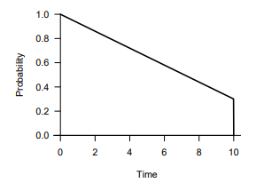
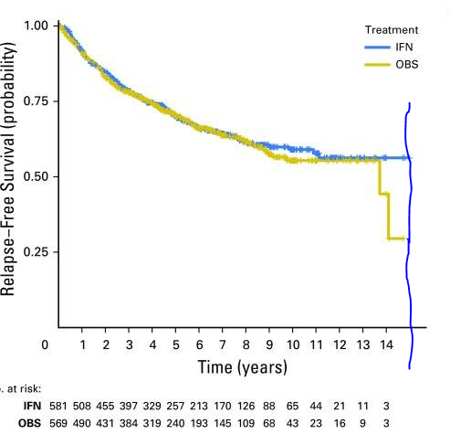

Trouble with tau
This post is to express some minor frustration with some papers I’ve read recently evaluating the performance of restricted mean survival time as a summary measure in oncology studies.
I should say that I’m not a saint when it comes to designing simulation studies. Consiously and/or unconsiously, it’s tempting to give our favourite methods an easier ride.
Nevertheless, a couple of things bother me, and they’re related to each other. One is the choice of censoring distribution, and the other is the choice of \(\tau\) in the definition of restricted mean survival time (I’ll explain).
Restricted mean survival time
The restricted mean survival time up until month \(\tau\) is the average amount of time patients are alive for out of the first \(\tau\) months:
\[\text{RMST}(\tau):=E\left\lbrace \text{min}(\tau, T)\right\rbrace\]
It’s sometimes defined as the area under the survival curve \(\text{RMST}(\tau):=\int_{0}^{\tau}S(t)dt\). Is it obvious that that’s the same thing? Maybe it should be, but not to me right now…
\[ \begin{aligned} E\left\lbrace \text{min}(\tau, T)\right\rbrace & = \int_{0}^{\tau}tf(t)dt + \tau\int_{\tau}^{\infty}f(t)dt\\ & = \left[ tF(t) \right]_0^{\tau} - \int_{0}^{\tau}F(t)dt +\tau S(\tau)\\ &= \tau\left\lbrace 1 - S(\tau) \right\rbrace - \int_{0}^{\tau}\left\lbrace 1 - S(t)\right\rbrace dt +\tau S(\tau) \\ &= \int_{0}^{\tau}S(t)dt \end{aligned} \] As a summary measure for treatment effect, one could use a difference \(\text{RMST}_E(\tau)-\text{RMST}_C(\tau)\), or a ratio \(\text{RMST}_E(\tau)/\text{RMST}_C(\tau)\) contrasting the exerimental and control arms. One could perform estimation by plugging in the Kaplan Meier estimates, \(\hat{S}_E(t)\) and \(\hat{S}_C(t)\), for example.
How to choose \(\tau\)?
A very basic consideration is that everything later than \(\tau\) will be ignored. This suggests that taking \(\tau\) as large as possible might generally (not always) be the most powerful strategy.
Censoring distributions
This brings me on to censoring distributions, and comparisons with the log-rank test / Cox model. With the log-rank test, every event contributes to the test statistic. So whatever the choice of \(\tau\), if there are many events after \(\tau\), then this often (not always!) means that RMST will tend to lose power compared to log-rank / Cox. So if you’re conducting a simulation study and you would like to show the benefits of RMST, what’s a good censoring distribution?
Well, something that looks like this…

I see this again and again. What this graph is showing is that there is some reasonably high (e.g. 30%) number of patients who’s censoring time is equal to the length of the study. In other words these 30% of patients are recruited immediately upon the study starting. In this situation there’s no problem with pushing \(\tau\) right up to the length of the study, and RMST would use all of the data in the same way as log-rank / Cox.
The problem of course is that recruitment never looks like this! If a more realistic censoring distribution were used where recruitment starts slowly and increases gradually, then this would create a problem for pushing \(\tau\) right up to the length of the study, because things would become unstable when only a few patients are at risk. One would be forced to bring \(\tau\) earlier, and one would see power loss (under certain situations) compared to the log-rank test.
Comparisons based on real trial data
Simulation studies can be manipulated to favour one method or another. Why not take a large selection of real studies and see which method performed best? Yes, an excellent idea from Horiguchi and colleagues. And to be fair, not only an idea, they’ve actually gone to the trouble of doing it. I still don’t think the comparison is totally fair though. They define \(\tau\) as “the minimum of the maximum observed times from two groups”. To see what this really means, I took a look at Kaplan-Meier curves from their first study (alphabetically), and drew (very badly) a line where \(\tau\) is. I don’t think anyone could report a difference in RMST at this \(\tau\) and keep a straight face. It’s clearly ridiculous. Regardless of whether or not the aymptotics hold well enough to give a valid test (they probably don’t), you’d simply have to bring \(\tau\) forward.
It won’t look this silly for every study of course, but that’s difficult to predict. As a general strategy, I think one would need to be more conservative.

From Agarwala, Sanjiv S., et al. Journal of Clinical Oncology 35.8 (2017): 885. (https://www.ncbi.nlm.nih.gov/pmc/articles/PMC5455684/)
Conclusions
I don’t want to dismiss restricted mean survival time as a useful summary measure. In some situations I’m sure it is a good idea. In some situations a log-rank test / Cox model is a bad idea. All I’m saying is that power comparisons should be a bit fairer, or at least, we should look at the details more closely. Like I said, I’m not immune to this kind of bias.
Dominic Magirr
Medical Statistician
Interested in the design, analysis and interpretation of clinical trials.